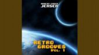

- # ?-0036
- Format: MP3
- Bitrate: 192 Kbps
- Duration: 1:58:43
- Clavis Aurea 4:44
- 8-Bit Voyager 4:04
- Contrails 5:00
- Song for Thelma 5:02
- Crystal Starlight 6:21
- 64-Bit Controller 4:51
- LA Love 3:12
- Summer in Andromeda 3:49
- Dreams Inc. 6:22
- Robots R Us 5:26
- 8-Bit Keys Theme 4:45
- Kindred Dreams 5:11
- A Moment's Delight 3:58
- Aurora Borealis 3:49
- The Shores of Alqualonde 4:07
- Vanguard 3:36
- Wave Journey 3:14
- Stargazer 4:21
- Voyage to Andromeda 5:07
- Ode to Hanna 4:45
- 8-Bit Keys Intro 0:23
- The Norwegian Blue 4:22
- 8-Bit Keys Intro MT-32 0:23
- Legacy of the 90s 4:35
- Starlight 2:55
- Return to the 80s 3:55
- Serenity 2:13
- Roland CM-32l Song 3:44
- 8-Bit Reggae 4:29